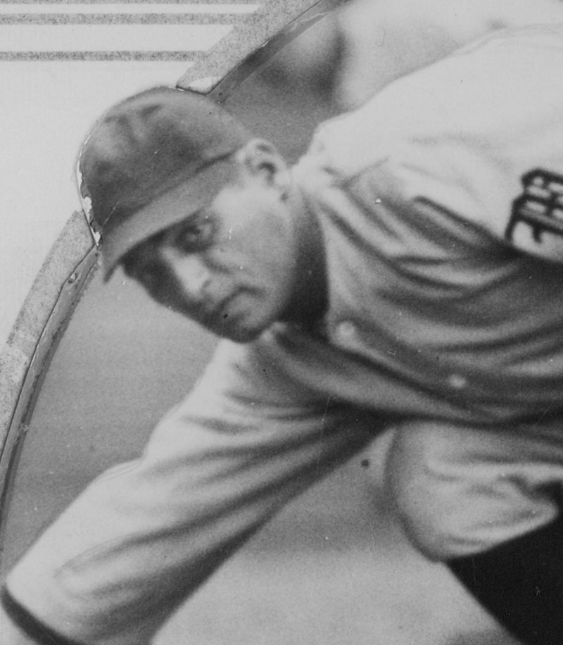

Ernie Orsatti
Ernest Ralph Orsatti (1902–1968) moved between the worlds that would shape the family archive: movies, baseball and talent representation. Born in Los Angeles on September 8, 1902, he was the sixth of seven children of Italian immigrants Maurizio and Maria (Manze) Orsatti, known in America as Morris and Mary.
He entered pictures as a young man and worked in Buster Keaton’s unit as a prop man, bit player and stunt double. Professional baseball followed: his major-league career with the St. Louis Cardinals ran from 1927 to 1935, with a .306 average across 701 games and World Series championships in 1931 and 1934.
After his last major-league game he joined brothers Frank, Vic and Al in the talent agency. Other ventures included an oddity shop and florist, a candy-vending-machine patent and, later, Orsatti Bail Bonds in Van Nuys.
He married singer Inez Gorman in September 1934; their sons Ernie F. and Frank H. carried the family into stunt work. They divorced in 1952. In 1960 he married Alice Joyce Ritchie and ran the bail-bond business with her until his death on September 4, 1968. He is buried at San Fernando Mission Cemetery.
Credits in the archive (5)
- 1923 Our Hospitality Stunts and props
- 1924 Sherlock Jr. Assistant property master & stunts
- 1928 The Cameraman Assistant property master
- 1929 Spite Marriage Stunts
- 1934 Death on the Diamond Bit part: a Cardinals player shot while running the bases
On the timeline
Ernie Orsatti's Oddity Shop and Florist
In the mid-1940s Ernie Orsatti opened Ernie Orsatti's Oddity Shop and Florist at 9130 Sunset Boulevard with his brothers-in-law – the same Sunset Strip address the family's talent agency used in the 1940s. His business cards showed Cardinals redbirds perched on a bat. He also held a patent on a candy vending machine and earned royalties on the theater-lobby candy bars that used it across Southern California.
Scouted by the Dodgers
Baseball ran in the family. Right out of high school, Ernie F. Orsatti was scouted by the Los Angeles Dodgers. By 1961 he was patrolling the outfield for the Los Angeles Valley College Monarchs, where the Valley Times singled him out as the son of the former major league star – Ernie Orsatti Sr., who played for the St. Louis Cardinals from 1927 to 1935 and won two World Series titles.
Ernie Orsatti wins Best Stunt Coordinator
At the 2nd Annual Stunt Man Awards, taped March 22, 1986 in Los Angeles before some 500 guests and hosted by Lee Majors, Ernie F. Orsatti won Best Stunt Coordinator for a feature film for Death Wish 3, sharing the category with Gary McLarty (Beverly Hills Cop). Charlton Heston, Chuck Norris, Heather Locklear, Robert Wagner, Ernest Borgnine and David Carradine were among the guests, and Yakima Canutt received the Harvey Parry Lifetime Achievement Award. The show aired in syndication nationwide that spring.
Sources: commons.wikimedia.org · sabr.org · en.wikipedia.org · imdb.com · damfinoroads.com · en.wikipedia.org · baseball-reference.com · sabr.org · House Beautiful, April 1946, p. 65: https://archive.org/details/housebeautiful88jannewy/page/n552 · reed.dur.ac.uk · docslib.org · catalog.afi.com · radiogoldin.library.umkc.edu · radioechoes.com · catalog.afi.com · imdb.com · allmovie.com · imdb.com · leadinglightsautographs.com